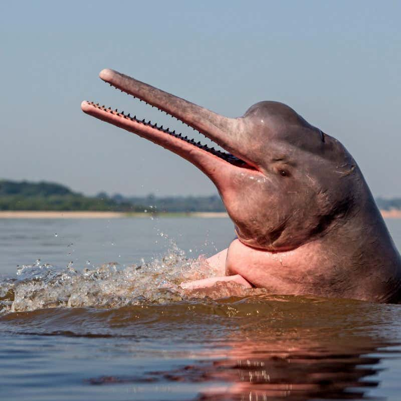

|  |
The Amazon river dolphin (Inia geoffrensis), also known as the boto, bufeo or pink river dolphin, is a species of toothed whale classified in the family Iniidae.
Three subspecies are currently recognized: I. g. geoffrensis (Amazon river dolphin), I. g. boliviensis (Bolivian river dolphin) and I. g. humboldtiana (Orinoco river dolphin) while position of Araguaian river dolphin (I. araguaiaensis) within the clade is still unclear.
The three subspecies are distributed in the Amazon basin, the upper Madeira River in Bolivia, and the Orinoco basin, respectively.
The Amazon river dolphin is the largest species of river dolphin, with adult males reaching 185 kilograms (408 lb) in weight, and 2.5 metres (8.2 ft) in length.
Adults acquire a pink color, more prominent in males, giving it its nickname "pink river dolphin". Sexual dimorphism is very evident, with males measuring 16% longer and weighing 55% more than females.
Like other toothed whales, they have a melon, an organ that is used for bio sonar. The dorsal fin, although short in height, is regarded as long, and the pectoral fins are also large.
The fin size, unfused vertebrae, and its relative size allow for improved manoeuvrability when navigating flooded forests and capturing prey.
They have one of the widest ranging diets among toothed whales, and feed on up to 53 different species of fish, such as croakers, catfish, tetras and piranhas.
They also consume other animals such as river turtles and freshwater crabs.
this species was ranked by the International Union for Conservation of Nature (IUCN) as being data deficient, due to the uncertainty regarding its population trends and the impact of threats.
While hunting is a major threat, in recent decades greater impacts on population have been due to the loss of habitat and inadvertent entanglement in fishing lines.
The Amazon river dolphin is the largest river dolphin. Adult males reach a maximum length and weight of 2.55 metres (8.4 ft) (average 2.32 metres (7.6 ft)) and 185 kilograms (408 lb) (average 154 kilograms (340 lb)),
while females reach a length and weight of 2.15 metres (7.1 ft) (mean 2 metres (6.6 ft)) and 150 kilograms (330 lb) (average 100 kilograms (220 lb)).
It has very evident sexual dimorphism, with males measuring and weighing between 16% and 55% more than females, making it unique among river dolphins, where females are generally larger than males
|